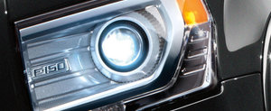
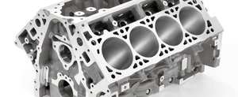
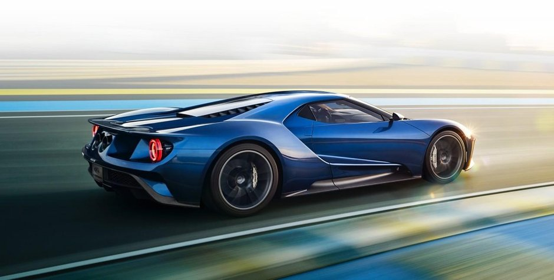
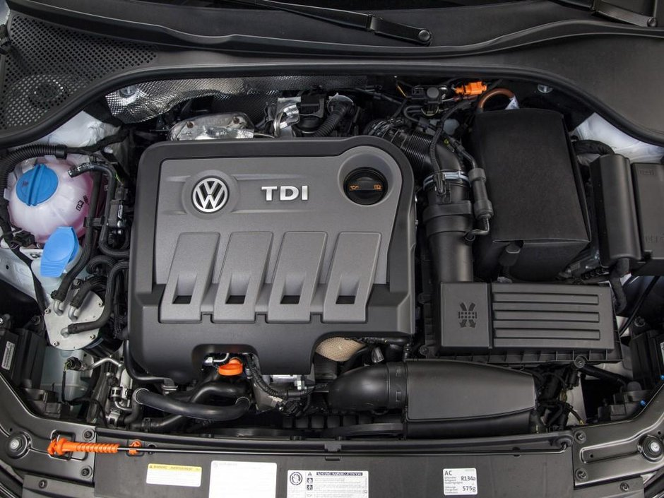
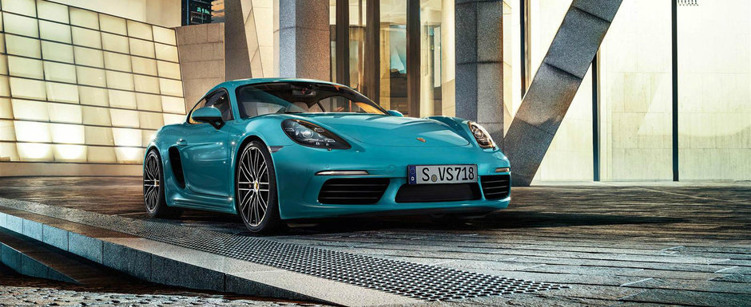

BestCars
Ultimele Stiri:
Specialistii ne invata: cum alegem
anvelopele potrivite si cum verificam
masina la sfarsit de iarna
Cum sa recunoastem o masina lovita
si reparata in doar 5 pasi simpli
Semafor verde intermitent la dreapta:
cine are voie sa stea pe prima banda?
De ce masinile de Politie din Romania
circula fara asigurare RCA?

Imposibil de omologat? Ce
elemente trebuie sa aiba farurile
cu Xenon ca sa circulam in legalitate?

Tu stii cum se calculeaza
capacitatea cilindrica a unui
motor?

Peste 7000 de clienti si-au exprimat
dorinta de a cumpara unul din cele 500 de Forduri GT

Ce trebuie sa faca in Romania posesorii de masini Volkswagen, Skoda,
Audi si Seat diesel?

Porsche mai strecoara in gama un model in patru cilindri. Cu ce valori se
lauda noul 718 Cayman